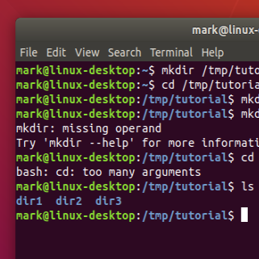
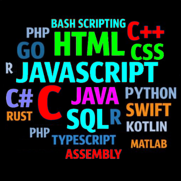

Android e software livre: 40 aplicativos
Existe mundo livre no Android! Conheça dezenas de apps criados por grupos de desenvolvedores.
Existe mundo livre no Android! Conheça dezenas de apps criados por grupos de desenvolvedores.

O que essa rede tem de diferente do Facebook, Instagram ou o Mastodon?
Veja uma bela coleção de sites comerciais e que podem expandir os horizontes de sua empresa.
Conheça outros meios de guardar seus arquivos; até mais eficientes e, de fato, livres.
Conheça os tipos de memórias de computador, veja detalhes...
Descubra a importância desse tipo de ferramenta para sua empresa, hoje em dia vital.
Fique esperto nos tipos de softwares de gestão para sua empresa, vital atualmente.
O Telegram vai bem além de app de mensagens, e os grupos incluem essa ideia.
Quais as opções de áreas de trabalho para quem gosta (ou ama) tecnologia?
Tudo o que vocẽ precisa saber sobre ter um site, vital nos dias atuais.
Sim, existe software público ou feito em comunidade, colaboração. Mas o que difere dos softwares privados?
Todos, em especial professores, deveriam ter consciência desse tipo de software.
Conheça os softwares livres mais populares.
Uma coleção com dezenas de softwares de marketing, muitos vitais para sua empresa.
Um panoroma sobre esse tipo de software que é de grande importância para sua empresa.
Pensando num servidor? Veja um resumo das principais opções a se considerar.
Quais as opções para os jovens estudarem tecnologia?
Um breve resumo sobre esses dois termos do design, também importantes no marketing.
Veja um resumo dos sites vitais para programadores.

Vamos entender um pouco do que se trata o tal do CLI?
No Brasil há vários servidores e neste artigo listamos alguns, inclusive históricos.
Indo além de um mero app de mensagens, saiba as razões para utilizá-lo na sua empresa.
No contexto da tecnologia, veja o que são essas empresas.
Lista com principais ornamentos dingbats, também emojis.
Quais os bons comportamentos que devemos adotar na web?
O poder do iFood, um exemplo de onde chegou a tecnologia.
O ambiente Wordpress é super poderoso na web, e conhecermos os plugins pode nos dar ainda mais ganhos.

Um panorama das principais linguagens usadas em computação.
Um acervo das principais ferramentas para uma loja virtual.
Um resumo sobre estruturas de dados.
Um breve estudo sobre recursos e ferramentas do GitHub.
Cada vez mais comuns, veja casos conhecidos.
Conheça as leis do Google e tenha mais chances de sucesso na web, se adequando.
Veja um resumo das características desse instrumento de um programador, e conheça marcas.
Uma seleção de grupos no Telegram, onde muitos são de tecnologia, por exemplo.
Um pequeno dicionário inspirado num livro de verdade!
O banco de dados do LibreOffice, alguns de seus recursos.
Teste dicionário json.
Repetido